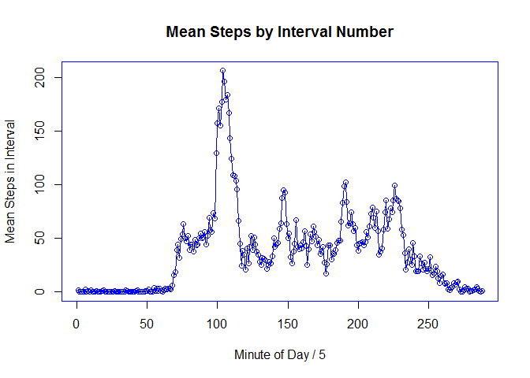
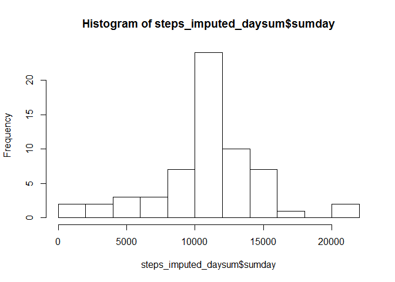
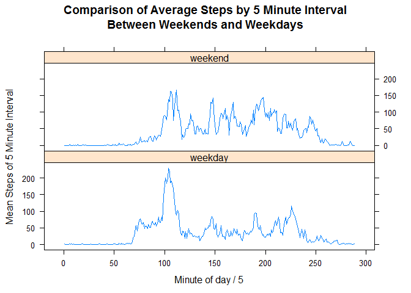

Reproducible Research - Project 1
Data were obtained from https://d396qusza40orc.cloudfront.net/repdata/data/activity.zip on 10/01/2016, but assume data are in current working directory.
unzip("activity.zip")
activity <- read.csv("activity.csv", header=TRUE)
head(activity)## steps date interval
## 1 NA 2012-10-01 0
## 2 NA 2012-10-01 5
## 3 NA 2012-10-01 10
## 4 NA 2012-10-01 15
## 5 NA 2012-10-01 20
## 6 NA 2012-10-01 25Group and sum steps by days. Compute and print mean and median.
library(dplyr)steps_daysum <- summarise(group_by(activity, date), sumday=sum(steps))
step_day_median = median(steps_daysum$sumday, na.rm=TRUE)
step_day_mean = mean(steps_daysum$sumday, na.rm=TRUE)
cat("median: ", step_day_median, " , mean: ", step_day_mean, sep="")## median: 10765 , mean: 10766.19Plot histogram.
hist(steps_daysum$sumday, breaks=10)
Create dataframe with interval indexed by it’s order in the day (61 days total, 288 5 minute intervals per 24 hour period, code assumes data set has full 288 sequences per day)
days = nrow(activity)
activity_indexed <- transform(activity, seq_no=rep(1:288, days)) %>% group_by(seq_no) %>% summarise(seq_mean=mean(steps, na.rm=TRUE))Find max of mean of intervals across days and plot.
dec_hours_of_max <- activity_indexed[max(activity_indexed$seq_mean), ]$seq_no * 5 / 60
cat("Hour and minute of average max steps: ", as.integer(dec_hours_of_max), ":",
as.integer((dec_hours_of_max %% 1) * 60), sep="")## Hour and minute of average max steps: 17:10par(col="blue")
plot(activity_indexed$seq_no, activity_indexed$seq_mean,
type="o",
xlab="Minute of Day / 5", ylab="Mean Steps in Interval",
main="Mean Steps by Interval Number")
Investigate and impute missing data by replacing NA values with mean for that interval from other intervals contained in active_indexed df
cat("Number of missing values:", sum(is.na(activity$steps)))## Number of missing values: 2304get_index <- function(interval_num, numdays=61){
# function that will compute an index (nth interval of the day) from the interval
# in the raw data file to be used as a lookup in activity_indexed
lookup_index <- interval_num %% 288
if (lookup_index[1] == 0)
lookup_index = 288
lookup_index
}
activity_xformed <- transform(activity, steps_imputed=activity$steps) # start with raw values
for (i in 1:nrow(activity)){ # replace NAs with value looked up from activity_indexed
if (is.na(activity_xformed[i, 4])){
activity_xformed[i, 4] <- round(activity_indexed[get_index(i), 2])
}
}
# Reporting
steps_imputed_daysum <- summarise(group_by(activity_xformed, date), sumday=sum(steps_imputed))
step_imputed_day_median = median(steps_imputed_daysum$sumday)
step_imputed_day_mean = mean(steps_imputed_daysum$sumday)
cat("median (imputed): ", step_imputed_day_median, " , mean (imputed): ", step_imputed_day_mean, sep="")## median (imputed): 10762 , mean (imputed): 10765.64cat("Change in median from data with NA's to data with imputed values: ", step_imputed_day_median - step_day_median, "steps")## Change in median from data with NA's to data with imputed values: -3 stepscat("Change in mean from data with NA's to data with imputed values: ", step_imputed_day_mean - step_day_mean, "steps")## Change in mean from data with NA's to data with imputed values: -0.549335 stepshist(steps_imputed_daysum$sumday, breaks=10)
Find if step interval averages are greater for weekdays than weekends
activity_xformed <- transform(activity_xformed, seq_no=rep(1:288, 61))
activity_xformed <- transform(activity_xformed, day_of_week=weekdays(as.Date(activity_xformed[, 2], "%Y-%m-%d"), TRUE))
activity_xformed <- transform(activity_xformed, weekend=ifelse(activity_xformed$day_of_week %in% c("Sat", "Sun"), "weekend", "weekday"))
xformed_grouped <- group_by(activity_xformed, weekend, seq_no)
sum_xformed_grouped <- summarise(xformed_grouped, mean_by_day_type=mean(steps_imputed))
library(lattice)
xyplot(mean_by_day_type ~ seq_no | weekend, data=sum_xformed_grouped,
layout=c(1,2,1), type="l",
xlab="Minute of day / 5", ylab="Mean Steps of 5 Minute Interval",
main="Comparison of Average Steps by 5 Minute Interval\nBetween Weekends and Weekdays")
The weekend step activity appears to be greater than the weekday activity starting around 10 am although weekday activity seems greater in the earliest part of the waking day.